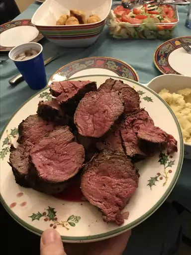

Grilled Beef Tenderloin

Description
This grilled beef tenderloin is seasoned with rosemary, thyme, and garlic, then grilled to a rosy pink.
Ingredients
- 1 (5 pound) whole beef tenderloin
- 8 large garlic cloves, minced
- 6 tablespoons olive oil
- 2 tablespoons minced fresh rosemary
- 2 tablespoons coarsely ground black pepper
- 1 tablespoon dried thyme leaves
- 1 tablespoon salt
Directions
- Use a sharp knife or scissors to remove silverskin and trim excess fat from tenderloin. Fold the thinner end under to approximate the thickness of the rest of the roast and tie with butcher's twine to secure. Tie tenderloin in 1 1/2- to 2-inch intervals to help it keep its shape during cooking.
- Mix together garlic, oil, rosemary, pepper, thyme, and salt in a small bowl; rub over tenderloin to coat. Let sit while you preheat the grill.
- Light a charcoal fire in one half of a charcoal grill or preheat a gas grill to high for 10 minutes and lightly oil the grate.
- Place tenderloin on the hot grill and close the lid. Grill until well-seared, about 5 minutes. Flip and repeat on the other side.
- Move tenderloin to the cool side of the charcoal grill, or if using a gas grill, turn off the burner directly underneath the tenderloin and turn the remaining one or two burners (depending on grill style) to medium. Cook until rosy pink and a meat thermometer inserted in the thickest section registers 130 degrees F (54 degrees C), 45 to 60 minutes. Cook time will depend on tenderloin size and grill.
- Let tenderloin rest 15 minutes before carving.